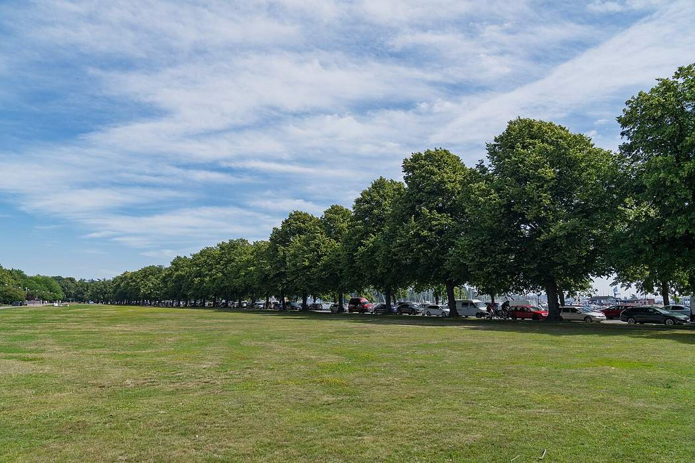
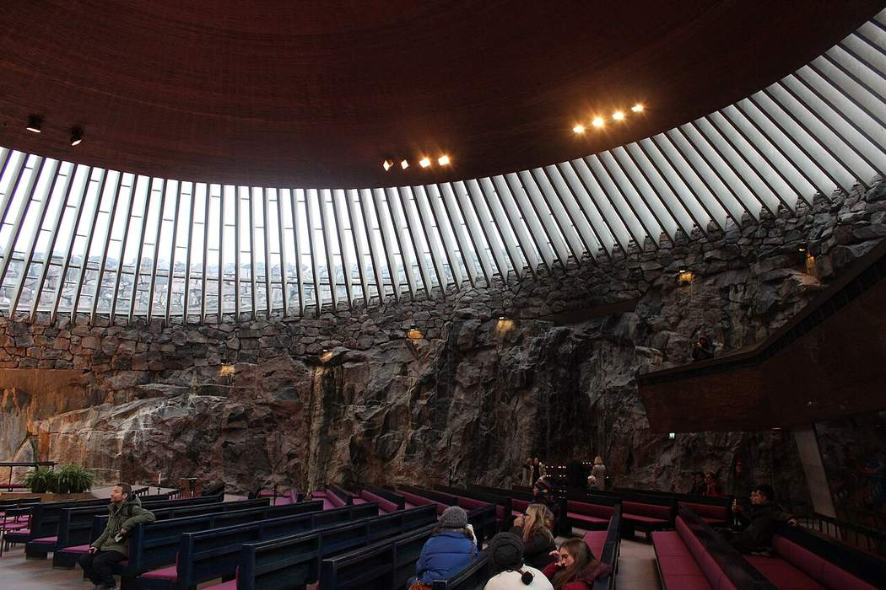
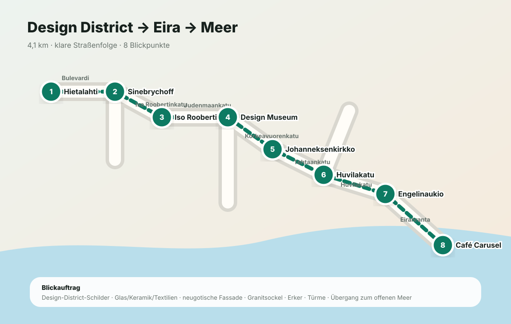
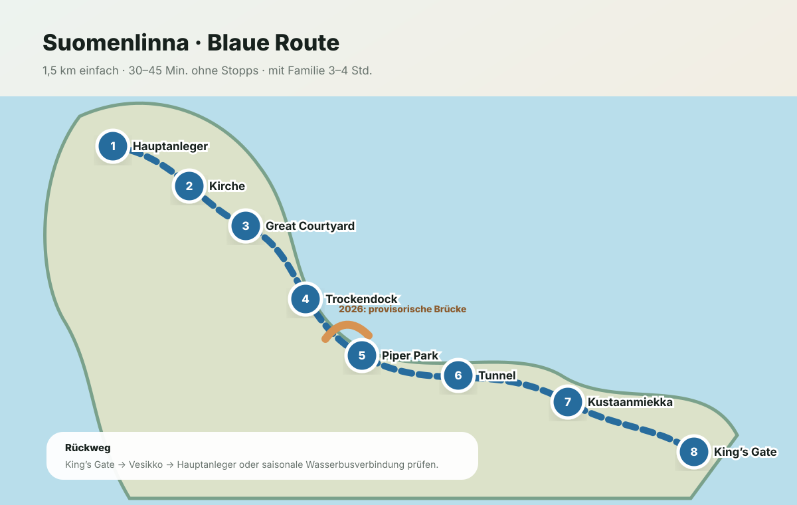
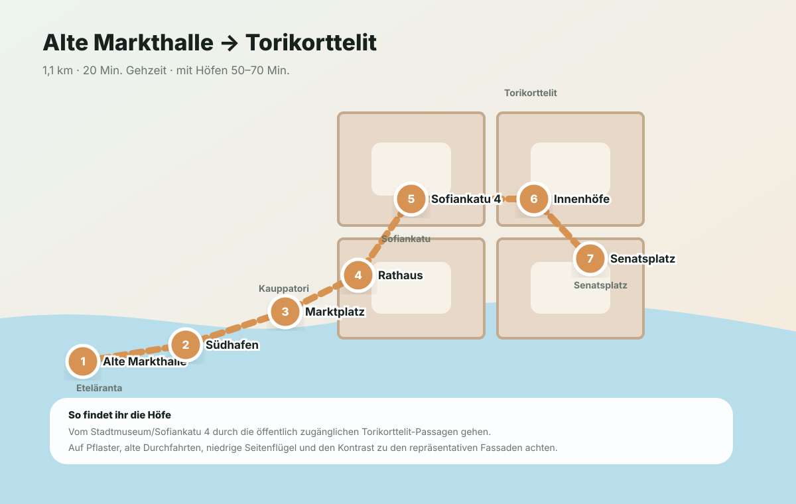
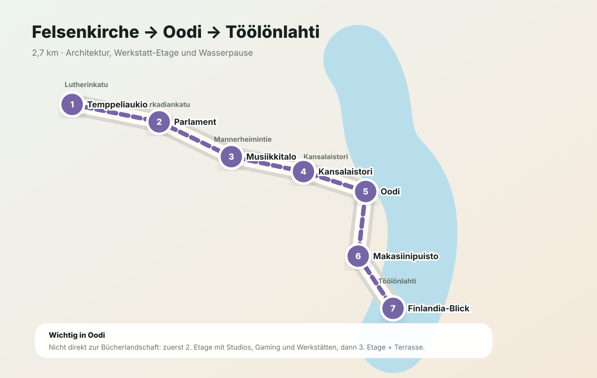

Tag 1 · Sonntag, 26. Juli
Ankommen.
Dann ans Meer.
ca. 4,5 km zu FußMarkthalle & FlohmarktSpielpauseKüstenabend
Drei Tage zwischen Meer, Architektur, Festungsinseln, gutem Essen und genügend Raum zum Spielen.
Startpunkt: Radisson Blu Seaside, Ruoholahdenranta 3. Das Auto bleibt möglichst stehen.


Die Karten sind bewusst nicht nur dekorativ. Jede Route nennt die genaue Straßenfolge, Abzweigungen und Blickpunkte. Die Schrittfolge bleibt offline verfügbar; die Live-Navigation öffnet bei Internetverbindung Google Maps.

Keine diffuse „Designrunde“, sondern eine klare Linie von der Markthalle über Punavuori und das Designmuseum durch die Jugendstilstraßen Eiras bis ans Wasser.

Die ausgeschilderte Hauptachse führt vom Hauptanleger über den historischen Kern nach Kustaanmiekka und zum King’s Gate. Die Familienzeit entsteht durch ausgewählte Stopps, nicht durch jedes Museum.

Hier bekommt ihr genau die Hinterhof-Perspektive, ohne versehentlich in private Wohnbereiche zu laufen: vom Südhafen über Sofiankatu in die öffentlich zugänglichen Torikorttelit-Passagen.

Der Weg verbindet vier völlig unterschiedliche Vorstellungen öffentlicher Architektur: Fels, monumentalen Granit, transparente Musikkultur und die offene Holzlandschaft von Oodi.
Die Routenkarte ist vollständig in den Guide eingebettet und benötigt keine Internetverbindung. Wählt einen Tag aus; für die exakte Live-Navigation bleiben die Karten-Links erhalten.
Tagsüber bleibt es bewusst leicht: der kleine Snack kommt gegen 14:00 Uhr, zusätzlich habt ihr Kekse und Getränke dabei. Das gemeinsame warme Essen beginnt jeweils ab 19:00 Uhr; optionale Abendbausteine reichen bis ungefähr 22 Uhr.
Kleine Auswahl statt Lunch: Pizza teilen, Gebäck, Suppe oder ein anderer Snack. Direkt am Hotel und ideal für unterschiedliche Wünsche.
Anbieter ansehenOhne Freizeitpark: Abendessen am Meer im Café Carusel. Mit aktiviertem Linnanmäki-Modul: direkt im Park bei Hurlumhei oder Spasso essen.
In Karten öffnenSandwich, Gebäck, Eis oder eine kleine Suppe. Bewusst nur ein kurzer Insel-Snack, damit die Route flexibel bleibt. In der Regenvariante übernimmt das Selbstbedienungsrestaurant im Heureka.
In Karten öffnenNeapolitanische Pizza beim Senatsplatz. Das gemeinsame warme Essen nach der Rückfahrt von Suomenlinna.
Restaurant öffnenGebäck, Sandwich oder Suppe als kleine Tagesmahlzeit. So bleibt Oodi Teil des Programms und kein langer Restaurantbesuch.
Oodi öffnenFrisch gebackene Lasagnevarianten auf der Iso Roobertinkatu, nur wenige Minuten vom Hotel. Das Abschlussessen, bevor ihr das Gepäck holt und bis 21 Uhr abfahrt.
Restaurant öffnenFür Hotel, Innenstadt und Suomenlinna reicht das 3-Tage-Ticket der Zonen AB. Aktiviert es erst unmittelbar vor der ersten Fahrt. Ausnahme: Der Heureka-Regenausflug nach Tikkurila liegt in Zone C – für diese Hin- und Rückfahrt zusätzlich ABC-Einzeltickets kaufen.
Fährzeiten, Veranstaltungen, Restaurantzeiten und die Besucherzeiten der Felsenkirche können kurzfristig variieren.
Die Bilder wurden für das Layout beschnitten. Quellen: „Helsinki-Waterfront-Sunshine“ von acediscovery, CC BY 4.0; „Suomenlinna in Helsinki, Finland, 2024 July – 02“ von Safa Hovinen, CC BY 2.0; „Helsinki Central Library Oodi, 2019 (01)“ von Bahnfrend, CC BY-SA 4.0; „Interior of Temppeliaukio Church, Helsinki“ von Uhooep, CC BY-SA 4.0; „Hietalahti Market Hall … 2022 August“ von Simo Räsänen, CC BY-SA 4.0; „Merisatama Helsinki – Meripuisto Park; 2024 July“ von Tony Webster, CC BY 2.0. Alle Originale sind auf Wikimedia Commons abrufbar.
Die eingebetteten Karten sind schematische, geografisch ausgerichtete Routenpläne. Sie bleiben ohne Internet sichtbar und zeigen Reihenfolge, Küstenlage und wichtige Stadtbereiche. Für straßengenaue Fußwege, aktuelle Baustellen und ÖPNV-Verbindungen bitte bei bestehender Datenverbindung die verlinkte Karten-App beziehungsweise den HSL Journey Planner verwenden.
PWA V6 · Überarbeiteter Stand: 19. Juli 2026 · Neues Farbschema „Kupferpatina & Granit“: Patina-Grün für die Stadt (wie die Kupferdächer des Doms), Ostsee-Blau für Fähre, Suomenlinna und Regenmodus, warmes Kupfer für Abende und Linnanmäki, Granit-helles Papier. Dazu die Bildkarten aus V5: echtes Ortsfoto, „Darum lohnt es sich“-Zeile und Fakten-Chips in jeder Tagesübersicht; Fotos kommen automatisch per GitHub-Workflow von Wikimedia Commons. Öffnungszeiten, Fahrpläne und Veranstaltungshinweise am Reisetag nochmals prüfen.